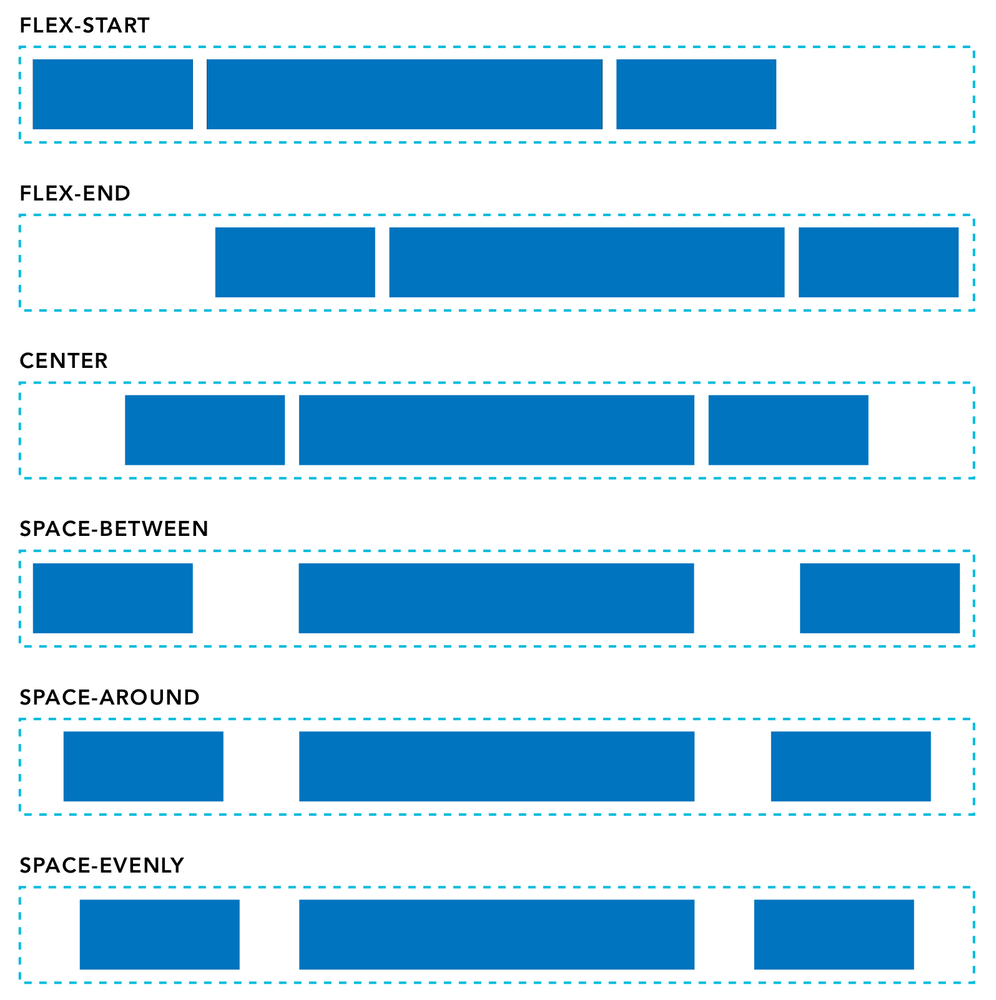
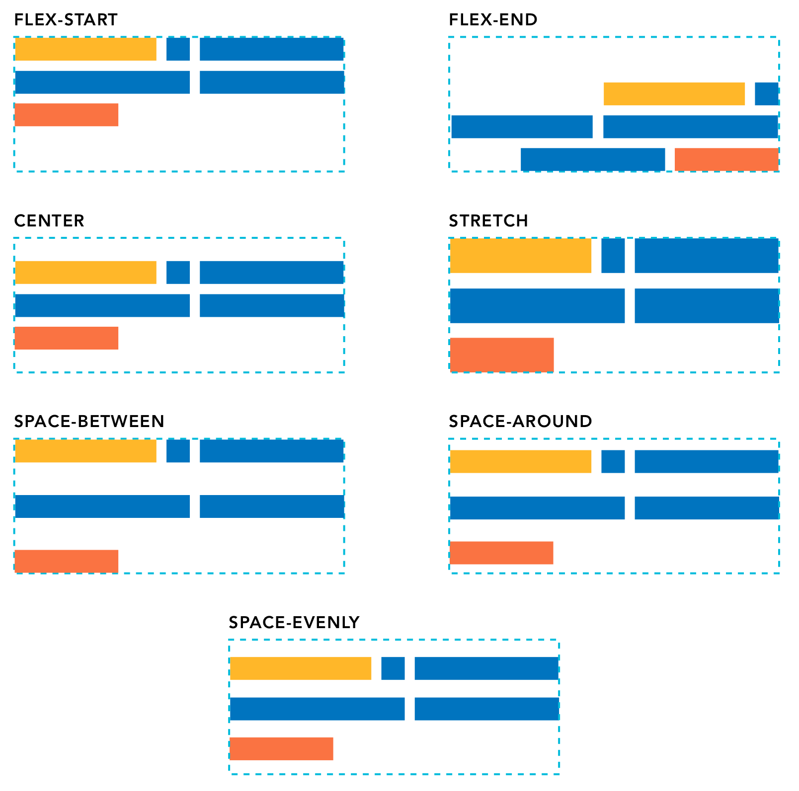

Frontend Development
Deeper with flexbox

overview: You can also use flexbox to center items vertically and horizontally.


terms:
    Main axis: the row or column orientation established by the flex-direction property

    Cross axis: the axis perpendicular to the main axis


Run frontend foundations starter repository
    cd out of readings and into dothis 
    then code starter-front-end-foundations-main

    The files for this lesson are stored in the deeper-with-flexbox folder; open the index.html file associated with each property with vscode live server


Flexbox properties
    Certain properties are applied to the group (or parent), and other properties are applied to the items nested with the group (or children).

    List of parent properties:
        flex-direction
        flex-wrap 
        justify-content 
        align-items 
        align-content 

    List of children properties:
        order 
        flex-grow 
        flex-shrink 
        flex-basis 
        align-self 


    Flex-direction property
        Establishes the main axis, telling the items to display as either a horizontal row(left to right) or vertical column(top to bottom)
            Other options:
                row-reverse(right to left)
                column-reverse(bottom to top)

    Flex-wrap property
        By default, the items within a flex group container will display on a single line. This can be changed to allow items to wrap as needed with the flex-wrap property:
            nowrap (all flex items will be on one line. This is the default.)
            wrap (flex items will wrap onto multiple lines from top to bottom)
            wrap-reverse (flex items will wrap onto multiple lines from bottom to top)

    Justify-content property
        This is a useful property when there is available space around the items of the group. Aligns items on the main axis.
            flex-start (items are packed toward the start of the flex direction. this is the default.)
            flex-end (items are packed toward the end of the flex direction)
            center (items are packed centered along the line)
            space-between (items are evenly distributed along the line; the first item is on the start line and the last item is on the end line)
            space-around (items are evenly distributed, but have a half-size space on either end)
            space-evenly (items and spacing are both evenly distributed)

            

    Align-items property 
        Similar to the justify-content property, but it aligns items on the cross axis.
            stretch (Items are stretched along the cross axis to fill the container, but any defined minimum and maximum item widths are still respected. This is the default.)
            flex-start (items are placed at the start of the cross axis)
            flex-end (items are placed at the end of the cross axis)
            center (items are centered on the cross axis)
            baseline (items are aligned along their baseline)

        Q: what is exactly is the difference between flex-start and baseline?

    Align-content property
        This property will apply only when there is more than one line of flex items. When there is extra space in the cross axis, it will align the flex group on that axis.
            stretch (items stretch along the cross axis to take up the remaining space. this is the default.)
            flex-start (items are packed to the start of the container's cross axis)
            flex-end (items are packed to the end of the container's cross axis)
            center (items are packed in the center of the container)
            space-between (items are evenly distributed with the first line at the start and the last one at the end of the container)
            space-around (items are evenly distributed with equal space around each line)
            space-evenly (items are evenly distributed with equal space around them)
        


Item (child) properties 
    The order property 
        By default, flex items will display in the order they are added to the html page. But with the order property, the items in the flex container can be adjusted.
        
    The flex property for items is actually shorthand for three properties:
        flex-grow (default is 0) 
        flex-shrink (defualt is 1)
        flex-basis (default is auto)

        But if you set the flex property with a single number value, like 1, the shorthand will use the single value to define the flex-grow property and will the set the other values appropriately.

    The flex-grow property 
        default is 0
        if it is set to 1, it will size all the items equally
        if it is set to 2, it will set the size of that item as twice as large as the other items

    The align-self property 
        This property lets the default alignment (or the one specified by align-items) be overridden for individual flex items.
        
        The values are the same as the values that you learned about for align-items. 

        Possible values: auto, flex-start, flex-end, center, baseline, stretch.


Flexbox layouts
    Common flexbox layouts  
        https://tobiasahlin.com/blog/common-flexbox-patterns/

Helpful games and resources
    Flexbox Defense teaches flexbox via a casual strategic defense game.
        http://www.flexboxdefense.com/
    Flexbox Froggy is a game that lets you practice writing CSS code. 
        http://flexboxfroggy.com/
    Flexy Boxes shows code samples and allows you to change parameters to help visualize how flexbox works. 
        https://the-echoplex.net/flexyboxes/
    Flexbox Patterns features many flexbox examples. 
        https://flexboxpatterns.com/
    
